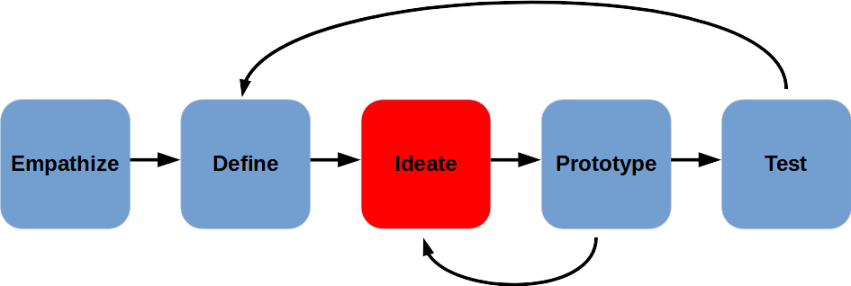
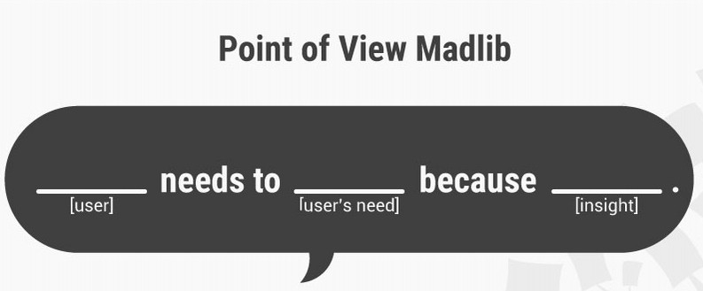
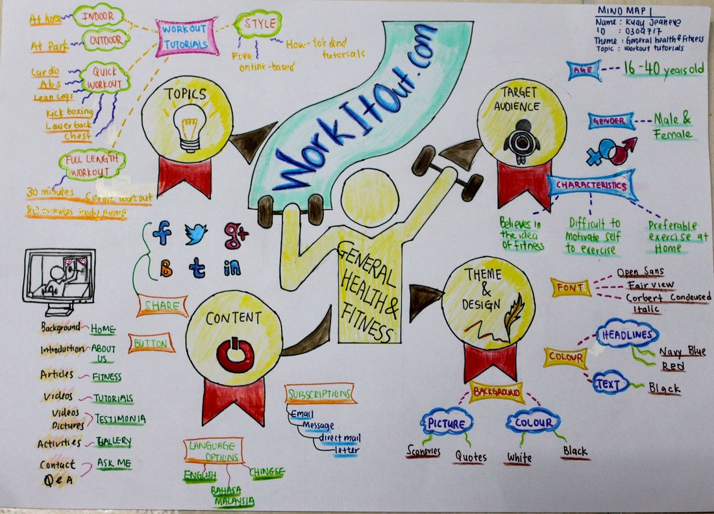
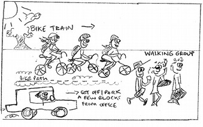

Ideate

- Generate Solutions for Problem Statement
- It's a creative process, trying to come up with non-obvious, unique ideas
- Define gave us a clear sense of what we want to solve
- As a Group, we can come up with some Unexpected Solutions
Important to have a well-defined Problem Statement from the previous Design Thinking stage, Define:

Ideation Process
- Keep Open Mind
- Listen to Others
- We Each Have a Unique View
- No Stupid Questions
- No Wrong Answers
- Break Down Problem Statement:
- How Might We... (HMW)?
Brainstorming

- Take turns discussing the problem and your ideas
- Take notes, but don't let that slow down conversation
- Add to ideas you like
- Pause before you give up on ideas you initially dislike
- A pictures tells a thousand words...
- Encourage wackiness - OK to be silly
It is easier to tone down a wild idea than to think up a new one. - Alex Osborn
Worst Possible Idea
- Come up with as many bad ideas as we can
- List properties - what makes the worst idea so bad
- Search for opposite attributes
- Look for substitutes
- Mix & Match
Once analyzed, a bad idea may turn out not so bad, after all...
Storyboarding

- Develop a story to illustrate problem/solution
- You need
- Characters
- Setting
- Plot
- Draw story out, like a comic
- Concentrate on relevant scenes
- Artistic skill not important, only convincing illustration of problem & solution matters
So, what now?
As a team, utilize one or more of the above Ideation techniques, and come up with some product/policy idea you'd like to market to your User group as a way to get them living more actively!
If you need to re-empathize or re-define, this is your last chance to better understand your user before commmitting to some prototyping work.
Fill out this handout.
A further note - when ideating for an Active Living project specifically, you should keep a few points in mind to help focus:
-
What kind of specific behavior or exercise is appropriate for your user group, that you wish to encourage.
-
What incentives can you create for the user, or which disincentives can your remove from the user's path in order to motivate them in the right way.
What you should not be thinking about at this stage is how hard will it be to prototype or build or code this idea...